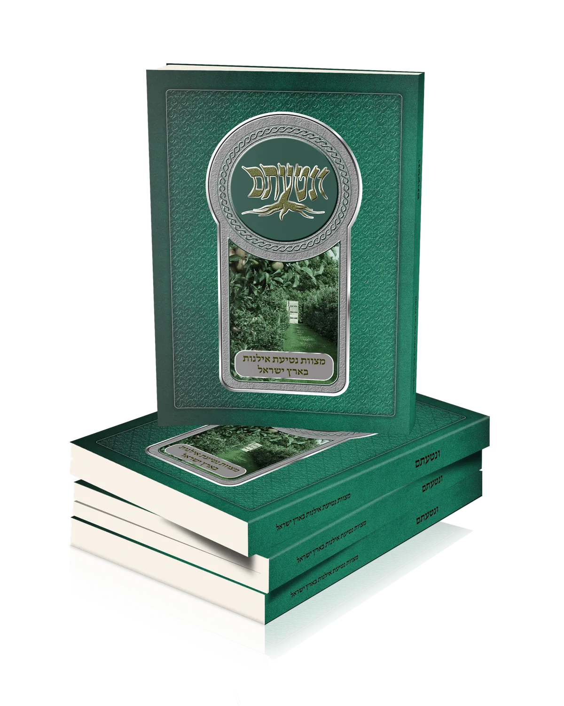
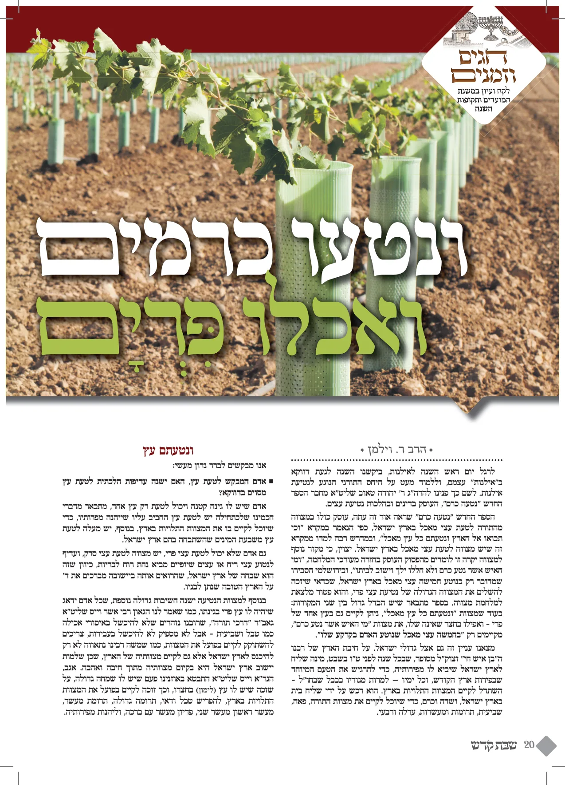
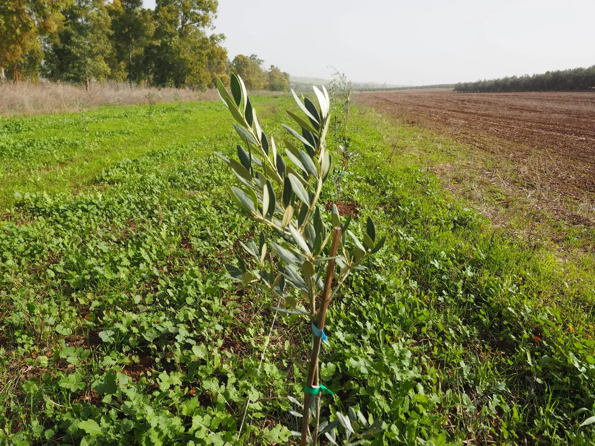
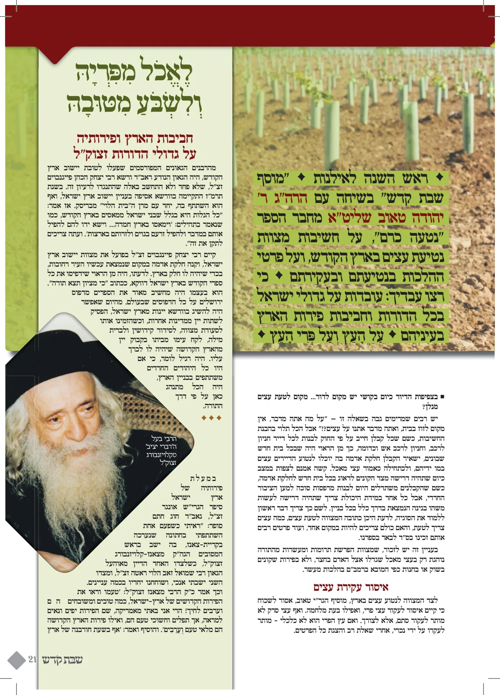
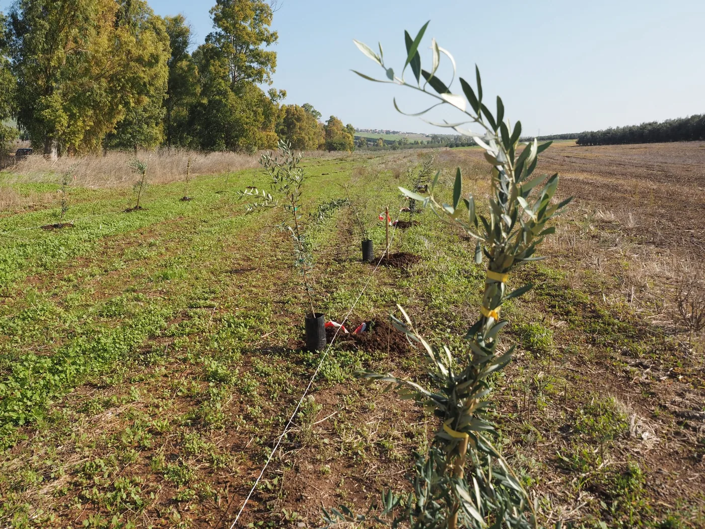
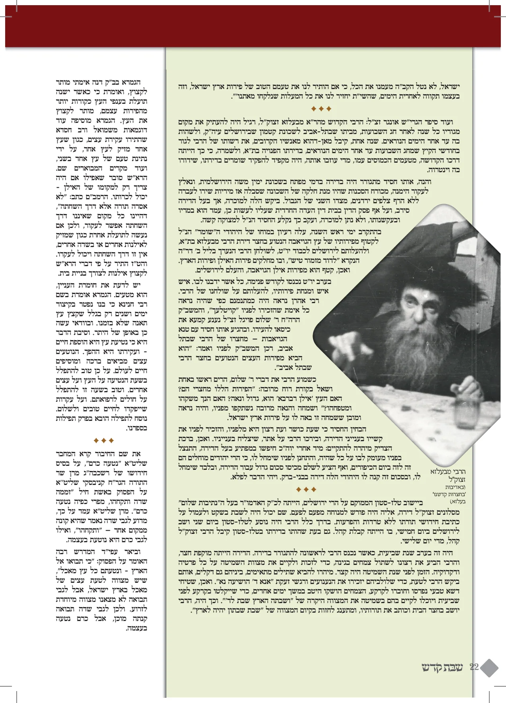
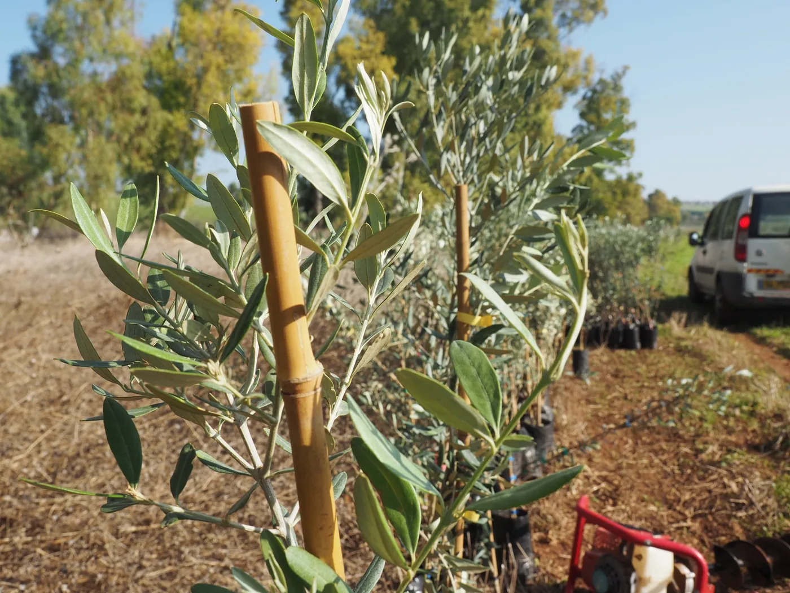
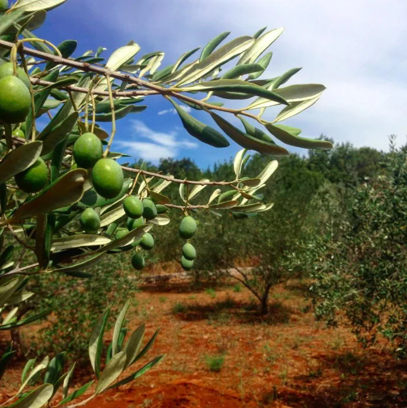
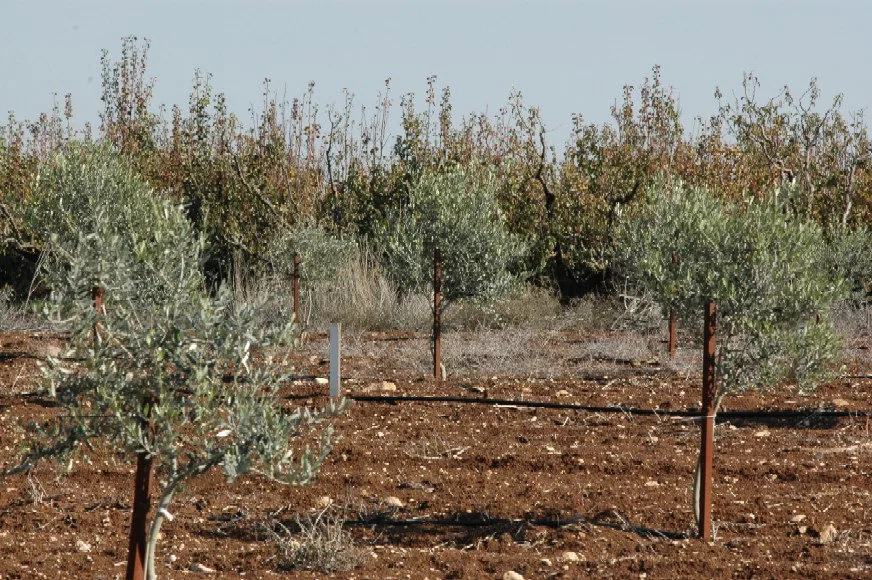

ספר על המצווה לטעת אילנות ופרחים בארץ הקודש
בשורה טובה לקהל לקוחותינו
בהמשך לספר על המצווה לבנות בית בארץ ישראל, אנו שמחים לבשר לכם שיצא ספר חדש על המצווה לנטוע עצים בארץ ישראל. וכיצד צריכה להראות גינת נוי בארץ ישראל.
אנו רוצים שהבית שלכם יהיה בית עם גינה יפה עם עצים מלאים פירות יפים, ואנו מאמינים שמודעות לחשיבות הדבר תיצור את הדבר, שמאמינים שרוצים הדברים נוצרים.
זה חוויה אחרית לחלוטין לגור בבית עם עצים וגינה פירות ארץ ישראל שגדלים בגינה שלכם, שהילדים קוטפים מהחצר מביאים הביתה ואבא קוטף ומברך עליהם. זה חיבת ארץ ישראל אמיתית.
גם אם אין לכם אפשרות לטעת עצים בגינה, בספר תראו כיצד גם אתם יכולים לקיים את המצווה על ידי קנית חלקת אדמה בארץ ישראל, על ידי חברה שתדאג לכל מה שצריך בשביל העצים שלכם. כמובן אם רק תרצו תוכלו אתם בעצמכם לטעת את העצים, החברה תדאג לשתילים לבורות באדמה ויזמינו אותכם לטעת עצים.
לחץ כאן לראות חלק מהספר - ונטעתם
ניתן להזמין את הספר במחיר 30 ש"ח
ונשלח לכם את הספר - במשלוח עד הבית
לחץ כאן לתשלום מאובטח באשראי ולמילוי פרטי משלוח
כתבה בעיתון שהתפרסמה על הספר
לחץ כאן לראות את הכתבה בעיתון המודיע
לחץ כאן לראות את הכתבה ביתד נאמן על הספר "ונטעתם" - מצוות נטיעת אילנות בארץ ישראל





סיפורו של עץ האתרוגים בחצרו של הגרמ"י ליפקוביץ זצ"ל
היה זה כמה שנים לאחר נישואיו של מרן רבי מיכל יהודה ליפקוביץ זללה"ה, בהיותו מתגורר בצריף העץ שעמד באותם ימים במעלה ההר, בכתובת שלימים התפרסמה בכל העולם – "רחוב וילקומירר 4 בני ברק". באחד הבקרים לאחר שסיים את תפילת שחרית כותיקין במנין אצל מורו ורבו מרן החזון איש זי"ע, ביקשו רבו הגדול שיכנס עמו לחדרו. מרן החזון איש פתח את הארון הקטן ששימש למקום קירור על ידי בלוק קרח שהיה מונח שם, הוציא מעטפה שבתוכה היו גרעינים מהאתרוג עליו בירך בסוכות, ומסרו לתלמידו – רבינו זללה"ה, וביקשו: "קח גרעינים אלו ונטע אותם בחצר ביתך ותגדל מהם עץ שיוציא אתרוגים מהודרים לברכה".
רבינו קיים את רצונו ובקשתו של רבו החזון איש, כאשר הרבנית מתמסרת לטפל בכל התהליך עד שנבטו הזרעים והפכו לשתילים, ומהם שתלה בחצר את העץ. מרן החזון איש זי"ע היה מתעניין במשך התקופה על התפתחות העץ והטיפול בו, והיה מזרז שיתנו מים לעץ שיגדל היטב. כשרבינו הביע פעם בפניו את חששו שאינו יודע כלום בגידול עצים ושתילתם, ומי יודע אם יצליח העץ, ענה החזון איש: "במשב רוח אחד ששולח הקב"ה מצליח העץ לגדול ולהצמיח פירות".
ואכן רצון יראיו יעשה, התהליך הצליח, ומיד לאחר שנות ערלה ורבעי, עם התקרב חג הסוכות מילאה התרגשות גדולה את רבנו ומשפחתו כאשר מרן החזון איש בא בעצמו לחצר לחפש אתרוג. מרן החזון איש נשכב מתחת לעץ בטירחה מרובה ובחר לעצמו אתרוג מהודר.
בהזדמנות כשטייל רבינו זללה"ה עם רבו מרן החזון איש זי"ע ורבו שאלו האם הוא משקה את העץ, שאלו רבינו מאין מוצאו של אתרוג זה, ומהיכן יודעים בוודאות שאינו אתרוג מורכב. ענה החזון איש: "אתרוג זה יש עליו דין כאתרוג עם מסורת", אמר ולא הוסיף. וידוע מתלמידי החזון איש, שאתרוג זה מוצאו מהעיר שכם, ומרן המהרי"ל דיסקין גם בירך על אתרוג מיוחס זה.
מאז שגדל העץ בחצרו של רבינו זללה"ה, הקפיד החזון איש לקחת ולברך דוקא על אתרוג מעץ זה, וכך גם המשיך גיסו מרן הסטייפלער זצוק"ל, שהיה מגיע מידי שנה ביום ט״ו לחודש אב [חודשיים לפני סוכות] לחפש על העץ אתרוג, והיה נוטל ושומר אותו בזהירות לחג הסוכות, כשהוא מקפיד לשלם עבור האתרוג מחיר מלא. באחת השנים כשרבינו סירב לקחת ממנו תשלום, אמר הסטייפלער לרבינו: "אתה הרי נותן לי הכל, ואני איני נותן לך כלום". כלומר, אתה מזכה אותי בחיי עולם הבא על ידי האתרוג המיוחס הזה שאתה נותן לי, וכל כסף וזהב שבעולם אינם שוים לעומת מצוה מהודרת זו.
באותן שנים, בימים לפני חג הסוכות היה ביתו של רבינו הפקר ממש. כל תלמידי החזון איש היו מסתובבים בבית ובחצר, ובודקים כל אתרוג שנקטף מהעץ. מסביב לעץ התפתחו שיחות בדברי תורה והיו הת"ח מתנצחים זה עם זה בהלכה. הריתחא דאורייתא מסביב לעצים היתה לשם דבר בבני ברק, החום הלוהט לא מנע מהם לטרוח בחביבות המצוה.
[נזכיר חלק מתלמידי החזון איש זי"ע שהיו באים כל שנה לקחת מעץ זה את אתרוגם: הגאונים רבי גדליה נדל, רבי חיים ברים, רבי דוד פרנקל, רבי יהודה שפירא, רבי משה יהושע לנדא, רבי אברהם הורביץ, רבי אלעזר צדוק טורצין, רבי חיים גריינמן זצ׳"ל, ולהבדלחט"א רבי מאיר גריינמן, רבי יחזקאל ברטלר שליט"א, ועוד ועוד], לאחר שעות של עיון וחיפוש בעץ, ובכל האתרוגים, החל מעמד המעשר, כשרבינו זי"ע עומד בחיל ורעדה מתוך מאמץ של ריכוז וכובד ראש לקיים מצוות תרומות ומעשרות בטבל ודאי. היו אלה שעות של עונג עילאי למי שחזה בהם.
במשך השנים ביקשו רבים מרבינו זללה"ה לקחת שתילים ולגדלם במקומות אחרים, ורבינו נתן בחפץ לב. הוא ראה בכך זכות לזכות את הרבים באתרוגים מהודרים בלתי מורכבים. תלמידי החזון איש שתלו פרדסים משתילי העץ הזה, ומכאן יצא ונפוץ זן האתרוגים הנפוץ ומוכר לכולם, זן חזון איש, שהיום נמכר בכל העולם.
המעניין הוא, שראו ברכה מיוחדת בעץ זה שבחצרו של רבינו, שברכתו של מרן החזון איש הועילה והעץ גדל ונתן פירות שנים רבות שלא כדרך טבעם של עצי אתרוגים שנחלשים מהר. רבינו זללה"ה בירך כל ימיו דוקא על אתרוג מעץ זה, וכן להבל"ח מקפיד מרן הגר"ח קנייבסקי שליט"א ועוד מגדולי ישראל [גם האדמו"רים מתולדות אהרן ותולדות אברהם יצחק לוקחים כל שנה אתרוג מעץ זה, שכך היה מנהג אביהם האדמו"ר הזקן מתולדות אהרן זצ"ל].
מדהים ומפעים, שבימי האבל לפטירת רבינו זללה"ה, בחדשי תמוז ואב, בזמן שמדי שנה היו מורידים מהעץ כמה מאות אתרוגים, לא נראה על העצים שום פרי, וראו בחוש שמאז שעלה לשמי רום ונסתלק לישיבה של מעלה נסתלקה הברכה מפרי עץ הדר. תלמידי רבינו עלו לקברו של מרן בעל החזון איש זי"ע ולקברו של רבינו זללה"ה ונשאו שם תפילה שתמשיך הברכה באילן, ואכן אחר כך ניכרה קצת התאוששות בעצים וצמחו כמה עשרות אתרוגים בודדים מפרי הדר מיוחס זה.
(גיליון פניני דעת)

לצאת בריקוד על הזכות
באחת השנים של ערב שנת שמיטה, בימי חודש אלול, הוצע לכ"ק האדמו"ר מסלונים שליט"א לרכוש חלקת אדמה בארץ ישראל, בכדי לקיים בה מצוות השביעית, לנטוש את עבודת האדמה ולהפקיר פרותיה. הרבי שליט"א שש ושמח על המצווה היקרה שנקרתה לפניו, והתבטא כי מן הראוי היה לצאת בריקוד על הזכות הנפלאה שנזדמנה לנו, שבאפשרותנו לקיים מצוות שמיטה כהלכתה – "ובשביעית תשמטנה ונטשתה". הוסיף הרבי, כי בעת שיברך ברכת 'שהחיינו' בראש השנה, יכוון בדעתו להודות גם על כך.
(בנתיבות אבות סלונים)
אמר הגרש"ז אויערבך זצ"ל: מסתבר מאד שכל אדם צריך להרגיש ולהודות לה' כשזוכה להיכנס לשנה חדשה של שבת הארץ, ולשנה שפירותיה הם קודש והפקר וכו', וזה הרי בא רק מזמן לזמן של ז' שנים. אבל לא עלה כלל על דעתי לחיב משום כן בברכה, כי אם שבברכת שהחיינו שעל היום טוב שיכוון גם לזה. ולדבר זה העיר ת"ח אחד, ואני נהניתי מזה, וגם הגרי"ש אלישיב נהנה מזה.
(הליכות שלמה תפילה)

לקנות קרקע לזכות עם ישראל
בשנת תר"ע התייצב בתוקף ובעוז ר' יעקב דוד וילובסקי (כונה הרידב"ז) רבה של סלוצק, שהתגורר בימים ההם בצפת נגד היתר המכירה, אליו הצטרפו כמה מגאוני חוץ לארץ ובראשם רבי נחום ווידנפלד, רבה של דומברובה שבגליציה (אחיו של הגאון רבי דוב בריש הרב מטשיבין).
סבל הרידב"ז הרבה מדיבת מלשינים, אשר בגין התנגדותו טפלו עליו עלילות שוא, אך הוא חשב את ההתנכלויות לתופעה טבעית ומבוססת על פי מה שכתב הגאון הצדיק רבי אליהו מגריידיץ זצ"ל, אשר השטן יעשה כל התחבולות להפריע (שלא ישמרו שמיטה) כי בשמירת השמיטה יצמיח הגאולה ואז יכלה הקליפה והסט"א מן הארץ, ומה יעשה אחר כך? על כן בטח יעשה תחבולות הרבה להפריע.
הרידב"ז היה לא רק נאה דורש, אלא גם נאה מקיים. בכספו הפרטי רכש לו כברת ארץ קטנה ליד העיר צפת. כדי לחדש את קיום הלכות השמיטה בארץ, והוא מעיד על עצמו כי קנה את חלקת האדמה "בעד כל קהל ישראל הנפוצים בכל קצות תבל" וכך "יזכו כל ישראל במצוה הזאת".
(פאר הדור ח"ג)

פלא יועץ - ערך זריעה
טוב לגבר אשר חננו ה' אפי' קרקע כל דהוא שיזרע בו אילני מאכל משום ישוב העולם דכתיב לא תוהו בראה לשבת יצרה (דבריו נאמרו על חו"ל שאין בזה ישוב הארץ רק ישוב העולם).
וצא ולמד מתרנגול הבר שסיפרו עליו בש"ס כמה יגיעות וכמה טרחות היה טורח בשביל לעשות ישוב לעולם ועוד יש כונה טובה שבכל דבר הצומח וגדל מן הארץ החלו עולין ניצוצות הקדושה אשר במקום ההוא מדומם לצומח ואח"כ יעלו מצומח למדבר כמבואר בדברי המקובלים.
והן בכלל שמקיים עצת חכמים זרע תבואה למאכל ביתך, ולא תזבון [אל תקנה תבואה מן השוק]. ואף על גב דכי הדדי נינהו [אף שמחיר התבואה בשוק הוא זול, ולא יהיה לך רווח מהעיסוק בגידול התבואה], מכל מקום, עדיף שתזרע בעצמך את התבואה ולאכול אותה, כי הני, אותם גידולי תבואה שגידלת בעצמך בקרקע שלך - הן מברכן! [הברכה מצויה בדבר שאינך קונה בדמים, ואינו כלה מהר]. (גמ' יבמות סג, א). וכן מפורש בדברי קבלה ע"י ירמיה (ס"י כ"ט) כה אמר ה' בנו בתים ושבו נטעו גנות ואכלו את פריין קחו נשים וכו'
והנה זרעוני גינה לא כל אדם יכול לזרען שצריך יגיעה מידי שנה בשנה אבל אילנות יזרע פעם א' ולו יהיה הזרע ולזרעו אחריו. ועיקר הכונה טובה שיש בזריעה הוא כי האיש הירא את ה' במצותיו חפץ מאד מבקש אופנים להתחייב במצות ושתהא מצוה באה לידו לעשות נחת רוח ליוצרו ולתקן הדברים בשורשן במקום עליון, והנה על ידי נטיעת אילנות מקיים מצות נטע רבעי ונזהר מאסור כלאים וכדומה ויוכל לקיים מעין דוגמת מצות בכורים שיקח הפרי הגדל ראשון ויביאהו דורון לת"ח שאמרו רז"ל שחשוב כאלו הקריב בכורים.
ואשרי השם מעייניו לעבוד את ה' בכל משלח ידים וכל מעשיו לשם שמים ויבורך ברכות שמים.
יגיע כפיך כי תאכל
בסביבות שנת ה'תקל"ז לאלף החמישי, העיר ה' את רוחו של רבינו מנחם מנדל מויטבסק זי"ע, ורבי אברהם הכהן מקאליסק זי"ע לעלות לארץ ישראל ברוב עם, ולכונן בה, יישוב של חסידים ואנשי מעשה, ההולכים בתורת הבעש"ט. הוא העדיף לוותר על הנהגת החסידות ברוסיה וליטא, ולמרות הקשיים הרבים החליט לעלות לארץ ישראל, אשר לשם נכספה נפשו והתאוותה נשמתו. בכך זכה להטמיע את אהבת הארץ וקדושתה בכל תנועת החסידות.
האדמו"ר רבי ישראל מרוז'ין אמר על עלייתו של רבי מנחם מנדל לארץ, ש"הייתה כעליית אברהם אבינו, שסלל את הדרך לבניו, שיכנסו כעבור כמה מאות שנים לארץ".
מההתעוררות שיצאה אז מבית מדרשו, התארגנו כשלוש מאות מאנשיו, שישבו בערים שונות במדינת רייסין (-רוסיה) לנטוש לצמיתות את ארץ העמים ולהיות נכונים לעליה לארץ ישראל. עלייה זו היוותה חמשה אחוזים מכלל (6000) היהודים, שהיו אז בארץ ישראל.
מסלול נסיעתם, עבר דרך ערים שונות ברייסין, וואהלין, אוקראינה ופודוליה, כשבכל מקום מתווספים עליהם עוד הרבה עולים ובני משפחותיהם, כי נספחו ובאו כולם לארץ ישראל הקדושה. אמנם חלק מהם חזרו חזרה.רק אשר כוונתם ודעתם לשם שמים, המה המופלגים בעלי תורה ועבודה, הם הנה אשר נשארו בארץ הקודש.
רבי מנדל זי"ע קשר לארץ ישראל את בני דורו והבאים אחריהם, קשר אמיץ ביחודא שלים. מי מהם שעלה בגופו והתנחל בארץ השכינה, ומי מהם שהתקשר אליה רק במתן דמים ושקלי הקודש מעות ארץ ישראל, אשר חיבת הקודש הכשירתו להיות לו באמצעותם אחיזה ושורש בפלטרין של מלך, והיו עיניו ולבו שם כל הימים – כדברי חז"ל (כתובות עה, א – ר' מיישא בר בריה דר' יהושע בן לוי) "אחד הנולד בה ואחד המצפה לראותה". היה אומר: אדם מישראל הגר בארץ ישראל, בכוחו להשפיע קדושה גם לבני חוץ לארץ.
לחץ כאן לראות סרט על עליתם.
העולים בראשות רבי מנחם מנדל מוויטבסק התגוררו תחילה בצפת ובשנת תקמ"א עברו רובם לטבריה. תקופה קצרה לאחר שהשתכן רבי מנחם מנדל בעיר טבריה עלה בדעתו להקים יישוב נוסף של חסידים, בנוסף לקבוצות שהתגוררו בצפת ובטבריה, בכפר העתיק פקיעין בגליל העליון. סמוך למערה המיוחסת כמקום מסתורו של רבי שמעון בר יוחאי ורבי אלעזר בנו.
כוונתו של רבי מנחם מנדל היתה להקים יישוב, בו יוכלו להתקיים תושביו מיגיע כפיהם בחקלאות, כך יוכלו לקיים את המצוות התלויות בארץ בקדושה ובטהרה, וכן יפרנסו את משפחותיהם מבלי להיות תלויים בעזרה ותמיכה מאחיהם שבגולה.
אך לאחר זמן קצר, בערב שבת קודש בהשכמת הבוקר, קם רבי מנחם מנדל והאיץ בכל היושבים בפקיעין, שיתפנו מיד מהמקום ויחזרו לטבריה, מאחר וההתישבות שלהם מכאיבה ודוקרת לסטרא אחרא (לכח הטומאה בעולם). ספר להם ר' מנחם מנדל, כי הס"מ (מלאך הטומאה) בכבודו ובעצמו נגלה אליו ואמר לו: "לא די שחידשת יישוב של יהודים בצפת ובטבריה, הנך מוסיף ומיסד ישובים נוספים?! תדע, שאם לא תעקרו מפה, אניח את כל העולם ואתפנה ללחום בך ובאנשיך"!
כל האנשים שמעו בקול רבם, ויצאו מבוהלים ודחופים מתחומי הכפר. רק אדם אחד, שהיו לו בכפר חפצים רבים ולא הספיק לארזם, נשאר לשבות שם, אך הוא ובני ביתו נפטרו במיתה חטופה ולא נותר מהם איש רח"ל.
ה'נתיבות שלום' זי"ע סיפר, שחותנו ה'ברכת אברהם' זי"ע תמה על פשר תקיפותו של הס"מ על חבורה זו, הרי הם רצו בסך הכל לעסוק ב'חקלאות', ולא חשבו להקדיש את כל ימיהם לעסוק בתורה ועבודה ומדוע הס"מ נרעש כל כך מתכניתם?
אין זאת, הסביר ה'ברכת אברהם', אלא כי הס"מ הבין שהם רוצים 'לתפוס' ולכבוש את הענין הזה של ישוב ארץ ישראל בחקלאות ועבודת האדמה, ולהכניסו אל תחת כנפי הקדושה, שמהיום והלאה עסק החקלאות בארץ ישראל יהיה כל כולו עבודת ה' בטהרה, ובכך להקדים את דור החלוצים הציוניים, שהפכו את החקלאות ל'דגל' על פי דרכם המוטעית והנפסדת. ומזה פחד הס"מ ובקש למנע זאת בכל כוחו, כיון שזה היה בנפשו...
בעת שפגש פעם ה'ברכת אברהם' את הגה"ח רבי בנימין מנדלזון זצוק"ל רבה של המושב החרדי קוממיות, אמר לו דבר זה. הסיק רבי בנימין, שכנראה כיום כבר נתרכך ותש קצת כוח הסטרא אחרא, וכבר ניתן ליסד מושב חקלאי בדרך התורה והקדושה.
סיפר הרב זאב גולד זצ"ל: בחגיגת מטעים בשרון, נתכבד מרן הראי"ה קוק בנטיעה הראשונה. כשקם והלך לנטוע התרגש מאד, עיניו זלגו דמעות, ופניו היו כלפיד אש. כשהגישו לו את המעדר, סירב לקחתו, והתכופף ובידיו טיפל ברגבי האדמה, כשכולו נתון ברעדת קודש.
כששאל אותו אחד המקורבים לפשר התרגשותו המיוחדת, השיב הרב ואמר: "נטיעת עץ פרי בארץ ישראל, אינה פעולה חקלאית רגילה. זוהי התדבקות במידותיו של הקדוש ברוך הוא, שאף הוא התעסק במטע הארץ תחילה".
אבות האומה – נוטעים אילנות בארץ
"כשנתן הקדוש ברוך הוא לאברהם אבינו את הארץ לא נתנה לו אלא כמות שהיא שנאמר קום התהלך בארץ, עמד אברהם והשביחה שנאמר ויטע אשל בבאר שבע, עמד יצחק והשביחה שנאמר ויזרע יצחק בארץ ההיא, עמד יעקב והשביחה שנאמר ויקן את חלקת השדה".
(ילקוט שמעוני דברים, רמז תתא)
ויטע (אברהם) אשל בבאר שבע - אמר ריש לקיש: מלמד, שעשה פרדס ונטע בו כל מיני מגדים.
(גמ' סוטה י, א)
דוסתאי ב"ר ינאי אומר משום ר' מאיר, הרי הוא אומר ביצחק וברכתיך והרביתי את זרעך, דרש יצחק, הואיל ואין ברכה שורה אלא במעשה ידי, עמד וזרע, שנאמר ויזרע יצחק בארץ ההיא וימצא מאה שערים.
(תוספתא ברכות פ"ו)
וירא אליו ה' ויאמר אל תרד מצרימה שכון בארץ, עשה שכונה בארץ ישראל הוי נוטע הוי זורע הוי נציב (נוטע אילנות), ד"א שכון בארץ שכן את השכינה בארץ.
(בראשית רבה, תולדות סד, ג)
וילך יצחק לשוח בשדה - כדכת' וכל שיח השדה. כלומר לטעת אילנות ולראות עניני פועליו.
(רשב"ם בראשית כד)
ד"א לשוח ליטע שיחים ואילנות, והרמז בזה שיצא לקראתה להעמיד ממנה זרע כשר כי אדם עץ השדה, וע"ד היש בה עץ.
(פענח רזא בראשית פרשת חיי שרה)